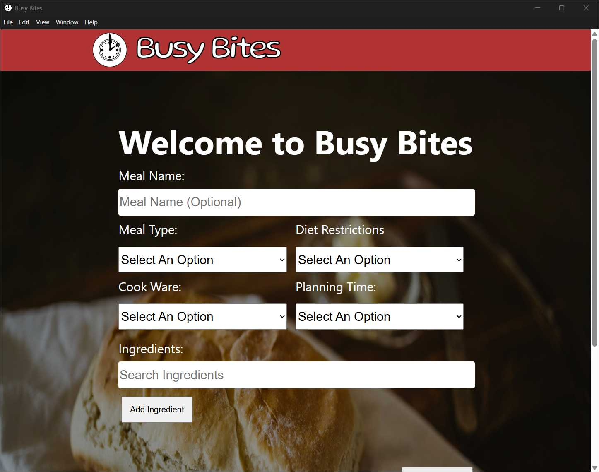

Busy Bites
October 2024 - September 2025

Technologies Used
Summary
Created a recipe search desktop application using React and Electron to help busy individuals on a budget find mouthwatering meals. Users can search over 4,000 recipes, filtering by meal type, cookware, ingredients, and time limit. This solves the issue of cooking healthy, time-constrained meals with the ingredients available in your kitchen.
Goals
- Create meals easily based on a time limit and ingredient list.
- Apply web development skills such as HTML, CSS, and JavaScript to create a responsive application.
- Learn and apply the React framework for web development.
- Learn how to retrieve data from API calls using GET requests.
- Explore options to deploy the application without having to host it on the Internet.
Constraints
- Limited recipe access, as retrieving recipes was often too costly. I didn't have access to a database of free recipes at the time.
- Following the terms of service of public websites reduced my ability to scrape recipe websites on the internet.
- The reduced timeframe for storing Spoonacular recipe data due to their terms of service.
Details
Inspiration
Struggling with meal planning during my job search, I wanted a smarter way to find recipes based on ingredients I already had. This project became both a personal solution to meal planning and a way to sharpen my developer skills.
Research
I found several sites that let users search recipes by ingredients, but none provided a usable developer API—scraping their data was against their Terms of Service. After researching alternatives, I discovered the Spoonacular Food API, which offered exactly what I needed: a free, scalable way to search recipes programmatically.
Requirements
Once I had a way to retrieve recipes from the Spoonacular API, I started outlining my requirements. I wanted users to be able to search and filter recipes by:
- Multiple ingredients
- Cookware
- Total planning time (prep time and cook time)
- Category: breakfast, lunch, dinner, or snacks
- Dietary restrictions
- Type of dish: soups, salads, main courses, and other dishes
Design
Once I had my requirements prepared, it was time to design the application in Figma. I planned out three main screens for the app.
- Search Recipes page: which included a form where users could enter their search queries.
- Recipe Results page: where a list of matching recipes would be displayed for users to browse and choose from.
- Recipe Details page: which not only referenced the original recipe source but also laid out the detailed steps users would need to follow in order to cook the dish.
Once I finished designing the three main pages, it was time to design the application logo. I designed it in the form of a clock, with a fork and knife as the clock hands and a plate as the background. This concept perfectly captured the time-sensitive nature of my application, which I named Busy Bites.
Development
I developed the core flow of the app in React, starting with a Search page to refine searching for recipes, a Results page capped at eight recipes per query, and a Recipe Details page with step-by-step instructions, summaries, and user reviews. Once this foundation was in place, I integrated Electron to package the app as a desktop application.
Challenges
- Studying the React framework for the first time.
- Organizing React components into a clear file structure
- Debugging the integration of React with Electron
- Understanding how to switch between web-based and Windows file paths
- Learning how to retrieve recipes from the Spoonacular API
- Searching for a reliable and reasonable recipe API
Lessons Learned
- Sometimes updates in React don’t appear immediately. Recompiling and refreshing the page usually fixes this.
- CSS can unintentionally carry over if imported into multiple React components.
- Modifying or refactoring major features can be time-consuming and requires careful planning.
- A clear and consistent file structure makes React components easier to manage and maintain.
- Regular breaks help maintain focus and prevent burnout during development.
- It’s important to evaluate libraries for long-term support. For example, the create-react-app command is now deprecated.
Tags
- #Web Development
- #Web Design
- #HTML
- #CSS
- #JavaScript
- #Figma
- #React
- #Electron
The use of programming languages, organizational, and technology logos on this site is solely for demonstrating the relevant technologies and complies with the respective brand guidelines. The organizations referenced do not affiliate with, sponsor, or endorse any content, project, or application on this site.